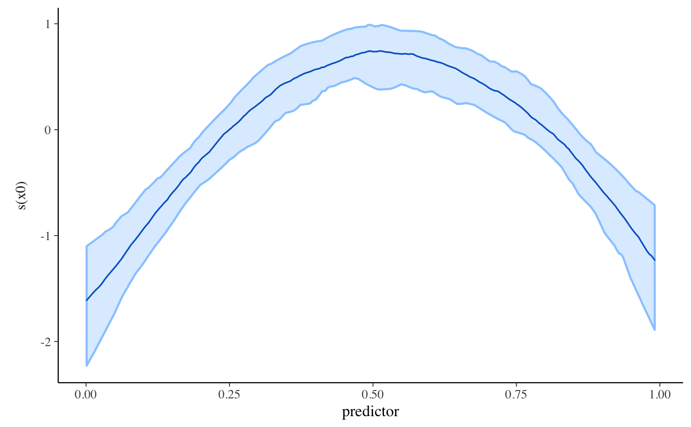

Bayesian generalized linear additive models with optional group-specific terms via Stan
stan_gamm4.Rd Bayesian inference for GAMMs with flexible priors.
Bayesian inference for GAMMs with flexible priors.
stan_gamm4(formula, random = NULL, family = gaussian(), data, weights = NULL, subset = NULL, na.action, knots = NULL, drop.unused.levels = TRUE, ..., prior = normal(), prior_intercept = normal(), prior_smooth = exponential(autoscale = FALSE), prior_aux = exponential(), prior_covariance = decov(), prior_PD = FALSE, algorithm = c("sampling", "meanfield", "fullrank"), adapt_delta = NULL, QR = FALSE, sparse = FALSE) plot_nonlinear(x, smooths, ..., prob = 0.9, facet_args = list(), alpha = 1, size = 0.75)
Arguments
| formula, random, family, data, knots, drop.unused.levels | Same as for
|
||||||||||
|---|---|---|---|---|---|---|---|---|---|---|---|
| subset, weights, na.action | Same as |
||||||||||
| ... | Further arguments passed to |
||||||||||
| prior | The prior distribution for the regression coefficients.
See the priors help page for details on the families and
how to specify the arguments for all of the functions in the table above.
To omit a prior ---i.e., to use a flat (improper) uniform prior---
Note: Unless |
||||||||||
| prior_intercept | The prior distribution for the intercept.
Note: If using a dense representation of the design matrix
---i.e., if the |
||||||||||
| prior_smooth | The prior distribution for the hyperparameters in GAMs, with lower values yielding less flexible smooth functions.
|
||||||||||
| prior_aux | The prior distribution for the "auxiliary" parameter (if
applicable). The "auxiliary" parameter refers to a different parameter
depending on the
|
||||||||||
| prior_covariance | Cannot be |
||||||||||
| prior_PD | A logical scalar (defaulting to |
||||||||||
| algorithm | A string (possibly abbreviated) indicating the
estimation approach to use. Can be |
||||||||||
| adapt_delta | Only relevant if |
||||||||||
| QR | A logical scalar defaulting to |
||||||||||
| sparse | A logical scalar (defaulting to |
||||||||||
| x | An object produced by |
||||||||||
| smooths | An optional character vector specifying a subset of the smooth
functions specified in the call to |
||||||||||
| prob | For univarite smooths, a scalar between 0 and 1 governing the width of the uncertainty interval. |
||||||||||
| facet_args | An optional named list of arguments passed to
|
||||||||||
| alpha, size | For univariate smooths, passed to
|
Value
A stanreg object is returned
for stan_gamm4.
plot_nonlinear returns a ggplot object.
Details
The stan_gamm4 function is similar in syntax to
gamm4 in the gamm4 package. But rather than performing
(restricted) maximum likelihood estimation with the lme4 package,
the stan_gamm4 function utilizes MCMC to perform Bayesian
estimation. The Bayesian model adds priors on the common regression
coefficients (in the same way as stan_glm), priors on the
standard deviations of the smooth terms, and a prior on the decomposition
of the covariance matrices of any group-specific parameters (as in
stan_glmer). Estimating these models via MCMC avoids
the optimization issues that often crop up with GAMMs and provides better
estimates for the uncertainty in the parameter estimates.
See gamm4 for more information about the model
specicification and priors for more information about the
priors on the main coefficients. The formula should include at least
one smooth term, which can be specified in any way that is supported by the
jagam function in the mgcv package. The
prior_smooth argument should be used to specify a prior on the unknown
standard deviations that govern how smooth the smooth function is. The
prior_covariance argument can be used to specify the prior on the
components of the covariance matrix for any (optional) group-specific terms.
The gamm4 function in the gamm4 package uses
group-specific terms to implement the departure from linearity in the smooth
terms, but that is not the case for stan_gamm4 where the group-specific
terms are exactly the same as in stan_glmer.
The plot_nonlinear function creates a ggplot object with one facet for
each smooth function specified in the call to stan_gamm4 in the case
where all smooths are univariate. A subset of the smooth functions can be
specified using the smooths argument, which is necessary to plot a
bivariate smooth or to exclude the bivariate smooth and plot the univariate
ones. In the bivariate case, a plot is produced using
geom_contour. In the univariate case, the resulting
plot is conceptually similar to plot.gam except the
outer lines here demark the edges of posterior uncertainty intervals
(credible intervals) rather than confidence intervals and the inner line
is the posterior median of the function rather than the function implied
by a point estimate. To change the colors used in the plot see
color_scheme_set.
References
Crainiceanu, C., Ruppert D., and Wand, M. (2005). Bayesian analysis for penalized spline regression using WinBUGS. Journal of Statistical Software. 14(14), 1--22. https://www.jstatsoft.org/article/view/v014i14
See also
stanreg-methods and
gamm4.
The vignette for stan_glmer, which also discusses
stan_gamm4. http://mc-stan.org/rstanarm/articles/
Examples
# from example(gamm4, package = "gamm4"), prefixing gamm4() call with stan_ # \donttest{ dat <- mgcv::gamSim(1, n = 400, scale = 2) ## simulate 4 term additive truth#> Gu & Wahba 4 term additive model## Now add 20 level random effect `fac'... dat$fac <- fac <- as.factor(sample(1:20, 400, replace = TRUE)) dat$y <- dat$y + model.matrix(~ fac - 1) %*% rnorm(20) * .5 br <- stan_gamm4(y ~ s(x0) + x1 + s(x2), data = dat, random = ~ (1 | fac), chains = 1, iter = 200) # for example speed#> #> SAMPLING FOR MODEL 'continuous' NOW (CHAIN 1). #> Chain 1: #> Chain 1: Gradient evaluation took 0.000138 seconds #> Chain 1: 1000 transitions using 10 leapfrog steps per transition would take 1.38 seconds. #> Chain 1: Adjust your expectations accordingly! #> Chain 1: #> Chain 1: #> Chain 1: WARNING: There aren't enough warmup iterations to fit the #> Chain 1: three stages of adaptation as currently configured. #> Chain 1: Reducing each adaptation stage to 15%/75%/10% of #> Chain 1: the given number of warmup iterations: #> Chain 1: init_buffer = 15 #> Chain 1: adapt_window = 75 #> Chain 1: term_buffer = 10 #> Chain 1: #> Chain 1: Iteration: 1 / 200 [ 0%] (Warmup) #> Chain 1: Iteration: 20 / 200 [ 10%] (Warmup) #> Chain 1: Iteration: 40 / 200 [ 20%] (Warmup) #> Chain 1: Iteration: 60 / 200 [ 30%] (Warmup) #> Chain 1: Iteration: 80 / 200 [ 40%] (Warmup) #> Chain 1: Iteration: 100 / 200 [ 50%] (Warmup) #> Chain 1: Iteration: 101 / 200 [ 50%] (Sampling) #> Chain 1: Iteration: 120 / 200 [ 60%] (Sampling) #> Chain 1: Iteration: 140 / 200 [ 70%] (Sampling) #> Chain 1: Iteration: 160 / 200 [ 80%] (Sampling) #> Chain 1: Iteration: 180 / 200 [ 90%] (Sampling) #> Chain 1: Iteration: 200 / 200 [100%] (Sampling) #> Chain 1: #> Chain 1: Elapsed Time: 2.46052 seconds (Warm-up) #> Chain 1: 2.8035 seconds (Sampling) #> Chain 1: 5.26403 seconds (Total) #> Chain 1:#> Warning: The largest R-hat is 1.12, indicating chains have not mixed. #> Running the chains for more iterations may help. See #> http://mc-stan.org/misc/warnings.html#r-hat#> Warning: Bulk Effective Samples Size (ESS) is too low, indicating posterior means and medians may be unreliable. #> Running the chains for more iterations may help. See #> http://mc-stan.org/misc/warnings.html#bulk-ess#> Warning: Tail Effective Samples Size (ESS) is too low, indicating posterior variances and tail quantiles may be unreliable. #> Running the chains for more iterations may help. See #> http://mc-stan.org/misc/warnings.html#tail-essprint(br)#> stan_gamm4 #> family: gaussian [identity] #> formula: y ~ s(x0) + x1 + s(x2), random = ~(1 | fac) #> observations: 400 #> ------ #> Median MAD_SD #> (Intercept) 4.3 0.2 #> x1 6.4 0.3 #> s(x0).1 0.5 2.3 #> s(x0).2 0.2 1.8 #> s(x0).3 0.8 2.1 #> s(x0).4 0.2 2.1 #> s(x0).5 0.9 2.1 #> s(x0).6 -1.9 1.2 #> s(x0).7 -0.6 0.7 #> s(x0).8 -2.8 1.9 #> s(x0).9 -0.1 0.9 #> s(x2).1 -45.3 13.5 #> s(x2).2 -4.8 9.1 #> s(x2).3 38.2 8.7 #> s(x2).4 -39.4 5.0 #> s(x2).5 2.9 4.9 #> s(x2).6 -10.8 1.6 #> s(x2).7 8.4 1.4 #> s(x2).8 -9.3 4.0 #> s(x2).9 1.7 3.1 #> #> Auxiliary parameter(s): #> Median MAD_SD #> sigma 2.0 0.1 #> #> Smoothing terms: #> Median MAD_SD #> smooth_sd[s(x0)1] 2.2 0.8 #> smooth_sd[s(x0)2] 1.2 1.4 #> smooth_sd[s(x2)1] 18.8 3.7 #> smooth_sd[s(x2)2] 2.9 3.5 #> #> Error terms: #> Groups Name Std.Dev. #> fac (Intercept) 0.45 #> Residual 2.01 #> Num. levels: fac 20 #> #> ------ #> * For help interpreting the printed output see ?print.stanreg #> * For info on the priors used see ?prior_summary.stanregplot_nonlinear(br)plot_nonlinear(br, smooths = "s(x0)", alpha = 2/3)# }